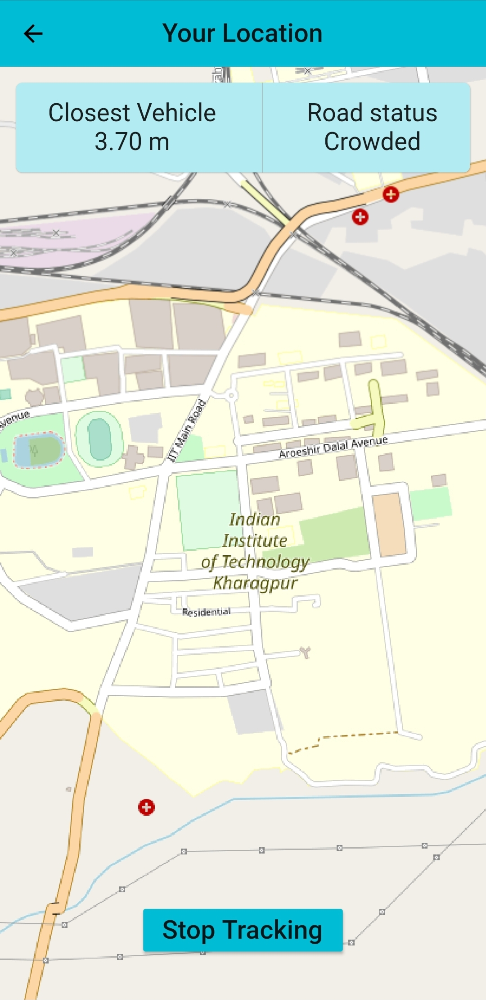
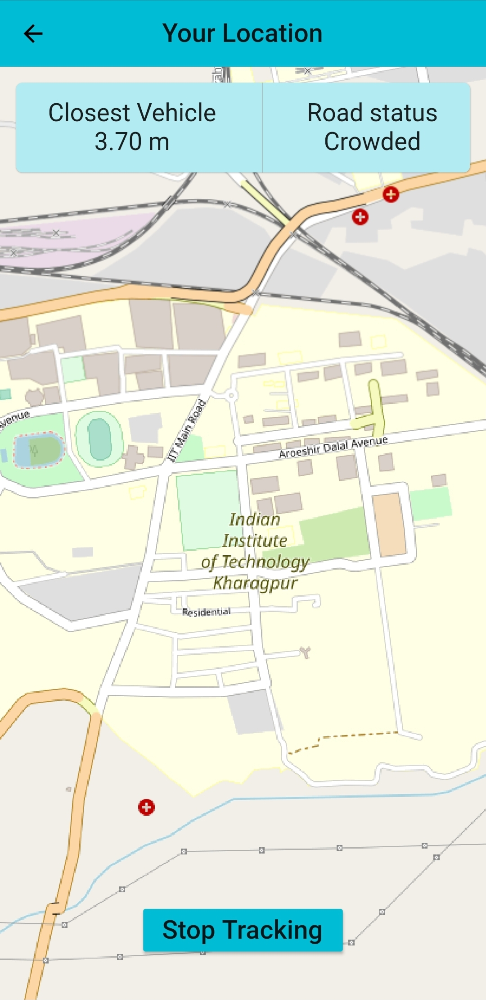
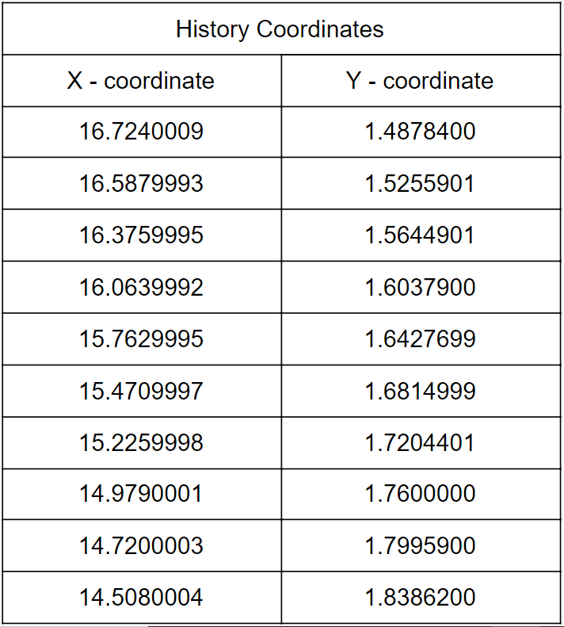

About Dharuna
Has it ever happened, that you are driving your car through a road and a vehicle just cuts you off. Thanks to your presence of mind, you avoided an accident! Obviously, it wasn't your fault anyways. Wouldn't you love it, if there were a way to know the future! Wouldn't it be awesome, if only you could know who's going to abrupt your peace of mind.
Well, guess what. The Future is NOW. Dharuna, an initiative by Ikshana, is an App, which predicts the pathways of nearby vehicles, just to keep you safe! Dharuna, collects the location of its users to compute the future trajectories of their vehicles, and alerts them in case of a possible accident.
All you need to do this to download the Dharuna App,from this link and whenever you are on the driving seat, just switch the app ON! Simple Registration, No Data Theft! And its not just your life which Dharuna saves, it also saves the second most precious thing(after your life, obviously), i.e., Time.
Dharuna sends your arrival information to Govt. regulated Traffic Lights, so you save those few secs. to be at your meeting on time, even if you take a 5 min extra nap after your alarm snoozes!
Why Dharuna?
Every year, approximately 13.5 Lac people die due to road accidents across the globe, which is equal to the number of COVID-19 deaths in this 1 year. 20% of deaths inside an ambulance are caused due to traffic jams or improper traffic management. On average, a person actually waits 6-7 months of their life at the traffic light.
Why do these facts go unnoticed? Why don’t countries actually work for the solution for these problems, as intensively as they are working on the COVID-19 Vaccine?
We at Ikshana, took that personally and came up with “Dharuna - Your On-Road Friend”. Dharuna is a DL-based app, which uses your geolocation, whenever you are driving, to minimize accidents and wait time at traffic lights.
Our main aim while making Dharuna was to build a technology, which predicts the future trajectories of all the vehicles of our app users and alerts a user well in advance if any vehicle’s trajectory is about to collide with theirs.
Also, with the data collected, we came up with traffic light timing regulation, wherein your location data shall be sent to the Traffic Authorities of a City, whenever you arrive at a crossing so that the timings and no. of vehicles crossing the light can be optimized to the best possible solution.
Demo of the Product
App Demo
‘Dharuna’ as an app is available for android as well as iOS platforms. It has a clean material design
and allows easy and intuitive navigation.The interface is quite elementary which makes it easy to
follow.
A new user is prompted to sign up for the app. The app itself asks for only the basic user data such as
their name, phone number and their email. In addition, the only in-app permission that it requires is
location-tracking. Therefore, the user can rest assured that at no point, their privacy can be violated.
Once a user logs in, they proceed forward to the landing page. Here they can start a driving session
whenever they want. Once they activate a driving session, the app starts tracking their location. The
location history is continuously streamed to a remote database and this data is processed to predict the
future trajectory of the vehicle. It also tracks nearby vehicles, thus effectively forming a complete
network.
Whenever the predicted distance of closest approach between two vehicles falls under a certain
threshold, the app raises an alarm to alert the driver.
The driver can then modify his driving pattern accordingly, thereby avoiding collision.
Meanwhile he can also monitor his location on the map and choose his route accordingly. He also gets
information about traffic conditions on the road thereby making navigation easier.
 

Algorithm Demo
Let us consider an example. The codebase uses the NGSIM US-101 dataset. Now, the dataset itself is huge. It has hundreds of frames and co-ordinates. But we shall consider only a very small subset of this dataset. Let us consider that each vehicle records 10 frames in it’s past history and predicts 10 frames in its future trajectory.

Upon doing error analysis, we find that the root mean square error of this prediction is 4.37 and negative log - likelihood is 4.22 Through this way, we can predict the future trajectories and apply our 2 applications - Accident Prevention and Traffic Light Timings Regulation. For viewing the Codebase,Click Here For a very simple Demo of Traffic Light Timing Regulation - Click Here
Technical Report
The product “DHARUNA” seems to have great values in Autonomous Industry and Traffic Management.A brief technical report is as follows:
TRAFFIC MANAGEMENT
Technically traffic flow has been divided into different classes “A to F” on the basis of comfort.When it comes to Class D the measuring of vehicle gets highly complicated and slight human error results to the collapse of traffic system.
In these stressful situations “Dharuna” stands as an aid to the driver.The app uses the GPS location to get the current coordinates of a vehicle and predicts the future coordinates using ML coded algorithm.
When the Majority uses this app we have the current and future coordinates of traffic. By knowing the future traffic flow the TRAFFIC LIGHTS can be manipulated accordingly to avoid congestions.
Consider a four phase signal system. Let suppose, everyone in
the traffic has Dharuna App working. Now, from the data retrieved from the Transport Office of the city,
we can get the values daily queue average length of a lane, let’s say Lavg and the average time to empty
the entire lane be T. Also, let the maximum lane queue length be Lmax.
Since the average length of the car is 4.5meters the length of queue formed when N vehicles approach the
signal
L = 4.5N + min gap between two cars
Consider two cases:
CASE I: Lavg < L < Lmax
The queue length L is formed while the lane is RED. As soon as the lane turns GREEN. The time taken by the lane shall be kept as to empty the L queue length along with additional time 't' such that 'Lmax - L' length queue vehicles which will join the lane while the lane is getting emptied can also pass through. Here, L shall be decided by Dharuna App's trajectory prediction algo, as many vehicles will take a free left, which won't be considered in the queue length L, hence aiming max. accuracy.
CASE II: L < Lavg
The queue length shall be decided by Dharuna App, as it predicts the trajectories of the vehicles. Also, the queue length L is formed while the lane is RED. As soon as the lane turns GREEN - the time taken by the lane shall be kept as to empty the L queue length along with an additional 5-sec YELLOW window. Here, we won't consider the fact that while the lane is getting emptied, more vehicles will approach from the back since 0 < L < Lavg. Time to empty the lane L in ‘t’ time will be - (L*T)/Lavg So we will set green time as t and after adding an amber time we can turn the light red. In this way we will save time for others who are waiting for their signals to turn green.
Accident Prevention
According to NCRB data, a total of 4,37,396 road accidents were recorded across India in 2019 out of which 92% were due to rash driving and overtaking. With these ML-based autonomous vehicles, human errors could be minimized by knowing future trajectory.
In traffic, if all the vehicle drivers are using the Dharuna App, then basically, we can very easily get the coordinates of every vehicle. With the help of those coordinates, the App can instantly test them on the Algorithm and we can get the future trajectories of all the vehicles.
We shall also define a very basic threshold distance, such that, if the vehicles are about to come closer to that threshold distance, then the app shall automatically give an alert sound. Through this, we can alert the drivers to take caution and prevent potential accidents.
Algorithm developed
Objective: To predict the future coordinates of the ego vehicle given a set of present and past coordinates.
Introduction: In order to safely and efficiently navigate through complex traffic composed by human drivers, an autonomous vehicle needs to have the ability to take initiative, such as deciding when to change lanes, overtake another vehicle, or slowing down to allow other vehicles to merge. This requires the autonomous vehicle to have some ability to reason about the future motion of surrounding vehicles. This can be seen in existing tactical path planning algorithms which depend on reliable estimation of future trajectories of surrounding vehicles. Prediction of future motion of surrounding vehicles is a challenging problem due to the high number of latent variables involved, such as, the end goals of all drivers in the scene and variability in driving style across different drivers. Vehicle trajectories tend to be highly non-linear over longer time horizons due to decisions made by the driver. Additionally, driver behavior tends to be inherently multi-modal, where a driver could make one of many decisions under the same traffic circumstances. Finally, interaction between vehicles tends to affect their motion. The large number of possible configurations of all vehicles in a scene can make this difficult to model. In spite of these challenges, there is structure to vehicle motion that can be exploited:
The maneuvering of the ego vehicle is divided into 6 possibilities viz. Break right, break left, continue on the same lane, maintain existing speed, accelerate and decelerate. For complying with the above statement we are expecting correctly marked and well-defined lanes on roads.
Implementation: We're using concepts of Convolution-Neural Network(CNN) and Long short-term memory(LSTM) from Deep Learning. We also use a pooling layer combined with CNN named convolution social pooling. LSTM is used as an encoder-decoder. The model can be represented as:
Convolutional social pooling: We propose a novel social pooling layer as an alternative to that proposed in. We apply convolutional and max-pooling layers instead of a fully connected layer to social-tensors of LSTM states that encode the past motion of neighboring vehicles.
Maneuver based decoder: Our LSTM decoder generates the probability distribution over future motion for six maneuver classes and assigns a probability to each maneuver class. This accounts for the multi-modal nature of vehicle motion.
For frame of reference we choose the ego vehicle(shown in black) as the origin and the Y axis in longitudinal to the lane and X axis lateral. The maneuvers are shown as above.
Test Data Set:
We use the publicly available NGSIM US-101 [4] and I-80 [5] datasets for our experiments. Each dataset consists of trajectories of real freeway traffic captured at 10 Hz over a time span of 45 minutes. Each dataset consists of 15 min segments of mild, moderate and congested traffic conditions. The dataset provides the coordinates of vehicles projected to a local coordinate system, as defined in section 3.1. We split the complete dataset into train and test sets. The test set consists of a fourth of the trajectories from each of the 3 subsets of the US-101 and I-80 datasets. We split the trajectories into segments of 8 s, where we use 3 s of track history and a 5 s prediction horizon. These 8s segments are sampled at the dataset sampling rate of 10 Hz. However we downsample each segment by a factor of 2 before feeding them to the LSTMs, to reduce the model complexity.
Inputs: It is a tensor of track histories as a function of coordinates and time frames.
X = [x(t-th)... x(t-1), xt] ; where xt=[ x0, y0, x1, y1… xn, yn] for a particular time interval t. And x0, y0are the coordinates of the ego vehicle(vehicle whose trajectory is to be predicted) and rest are of the neighboring vehicles within deviation of 90 feet in Y axis and the two adjacent lanes. So, basically X is a (th X n) tensor. More specifically termed as social tensor as it interacts with the neighbouring vehicles.
Outputs: Our output is tensor Y such that Y = [y(t+1), y(t+2), … y(t+tf)], where y(t)=(x, y) the coordinates of the ego vehicle at time=t. We predict till a considerable time (t+tf)
Execution:
From the above figure we observe that: The data of coordinates of each vehicle(including ego) are passed through separate LSTM. It actually retains the memory for previous time frame coordinates and acts as a filter for some of it.
A 13 X 3 spatial grid is defined around the vehicle being predicted, where each column corresponds to a single lane, and the rows are separated by a distance of 15 feet which approximately equals one car length. The social tensor is formed by populating this grid with surrounding car locations. We then apply two convolutional layers and a pooling layer to the social tensor as shown in Figure to obtain the social context encoding. Additionally, the LSTM state of the predicted vehicle is passed through a fully connected layer to obtain the vehicle dynamics encoding.
The social tensor is formed after encoding.
Convolution is done with a 3x3 matrix and a neural network is formed, since the dimension of the convolving matrix is 3 so it also accounts for the neighbouring vehicle and how it affects the path of the ego vehicle. Then we train the model end to end. To decide the weights of each of the layers of the neural network we try to minimize the negative log likelihood. Which is mathematically represented by: -log(P(Y|mi, X)*P(mi, X)) Summed over i We train the model using Adam with learning rate 0.001. The encoder LSTM has 64 dimensional state while the decoder has a 128 dimensional state. The sizes of the convolutional social pooling layers are as shown in the figure under the execution head. The fully connected layer for obtaining the vehicle dynamics encoding has size 32. We use the leaky-ReLU activation with =0.1 for all layers. The model is implemented using PyTorch.
Tensor is scaled down to 64 dimensional, further application of 3x1 convolution scales it to 16. We apply max pooling, which means selecting the maximum magnitude out of some values in a tensor. It is then concatenated with the ego vehicle’s data and fed into another decoder which is also a network of LSTMs and it creates the posterior distribution of probabilities of the maneuvers.
Finally the maneuver with highest probability is chosen, and the coordinates are set accordingly by adding the maneuver parameter to the present coordinates.
Marketing Pitch
For Govt. and other Pvt. Companies
Ikshana presents to you - Dharuna, which is an app that helps to regulate the Traffic Light Timings Automatically on the basis of queue length in any specific lane.
Approach
The app will
send
the location of all the users
using the app while driving. With help of this, we will be able to provide you with datasets
constantly
of
that lane. Using the coordinates of the vehicles we can predict their future path using our
DeepLearning
Algorithm.
The predictions for oncoming vehicles when the lane is Green can also be provided so that the timings can be regulated to maximum accuracy and precision. Implementation - Govt. can make this app as a mandatory app for people. Since we will be asking for a very simple and secured registration through the app, there rises no question for privacy theft.
We are also planning to collaborate with major smartphone companies in this project to make Dharuna, an in-built app in smartphones.
Additionals
Ikshana, in collaboration with Vintech Automation, Mumbai, presents
an offer
to
sell the
data
for the timing regulation
along with a fully equipped ‘Traffic Lights’ at a very subsidized rate. This collab offer
benefits
the
purchaser by 10-15% of total cost born when the traffic lights are set up on their own and
datasets
are
sold
solely along with the installation charges.
Benefits
Better reputation in the market and among the users, leading the Govt.
for
better
reach among
their vote banks and Private Constructors, for better contracts.
For Users
Dharuna also uses geolocation of its user through an in-built map in the app for regulating the timings of a traffic light, so you don’t have to wait for those extra seconds. Dharuna uses your phone location only while you manually switch it on. Ikshana presents - “Dharuna - Your On-Road Companion App” for all its trusted users.
Dharuna is an app which uses Deep AI Technology for predicting the accidents among their users well in advance. We respect your privacy as much as you trust our company and hence we assure you that your data shall remain unanimous in our datasets. For the better reach of this app among the users, Ikshana has also planned to collaborate with the Transport Ministry and major smartphone OS developers such as Android and iOS
Target Audience
The algorithm in its most basic senses, predicts the trajectory of all the vehicles whose coordinates are known to us. With an additional feature of releasing the algorithm through an app, we can target a huge horizon of the market for its best outputs.
The app itself, which on the front end helps the users to avoid accidents by alerting them well in advance, has a massive target base. With the given stats in the “Why Dharuna?” page, the users will understand the graveness of traffic management, eventually resulting in better reach for the app.
On the other hand, i.e. back end, the companies/govt. which are developing the crossings in their jurisdiction can make tie-ups with Ikshana for improving the traffic conditions in their region by regulating the traffic light timings. Also, additionally by enforcing compulsion on the use of the app, the companies/govt. can take credits for a reduced number of accidents, eventually increasing their contracts, reputation, vote banks, etc.
Legal Approach
Dharuna uses geolocation for receiving your coordinates to compute its further calculations. Tracking a person may cause many legal complications due to misunderstandings. We at Ikshana, have dedicated a Legal Department for answering your doubts.
The Legal Department shall take care of ensuring that the data sold to the Govt. Authorities which are in the form of coordinates and statistical values shall be used for the timing regulations of the traffic lights and nothing else. Data and Privacy Theft is a very big issue, and we are much more cautious towards it than anything else since we have been trusted for so many years by so many people.
Also, the Legal Department may take care of Open Source Licences for the codes and algorithms used in the back end of this product.
Even though our product may be a technical outcome and not a physical one, we have dedicated our Legal Team to their best efforts for the smooth functioning of our product.